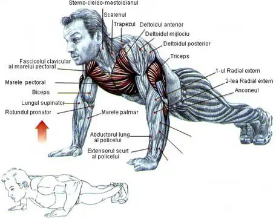

Flexia brațelor la umăr: Ridică brațele în față sau în sus.
Aducția brațelor: Aduce brațele către centrul corpului.
Rotația internă a brațelor: Contribuie la rotația internă a brațelor.
Stabilizarea articulației umărului: Asigură o bază solidă pentru mișcările umărului.
Funcția respiratorie (micul pectoral): Participă la inspirația profundă.
Stabilizarea scapulei (micul pectoral): Contribuie la stabilizarea și menținerea poziției omoplatului.
Sistemul Muscular

Atentie
Riscuri pentru Mușchii Pectorali
1. Suprasolicitarea: Antrenamentul excesiv sau repetarea excesivă a anumitor exerciții poate duce la suprasolicitarea mușchilor pectorali, ceea ce crește riscul de leziuni.
2. Utilizarea Greutăților Prea Mari: Ridicarea unei greutăți prea mari sau încercarea de a progresa prea rapid poate pune o presiune excesivă asupra mușchilor și poate cauza leziuni.
3. Tehnica Incorectă: Executarea exercițiilor cu o tehnică incorectă poate să încarce greșit mușchii și articulațiile, crescând riscul de traumatisme.
4. Lipsa Încălzirii: Începerea antrenamentului fără o încălzire adecvată poate crește riscul de întinderi și leziuni musculare.
5. Supraextensia Articulară: Întinderea sau flexarea excesivă a articulațiilor poate duce la întinderi sau leziuni ale mușchilor pectorali.
6. Obosirea Musculară: Antrenarea în condiții de oboseală extremă poate duce la pierderea controlului asupra exercițiilor și poate crește riscul de leziuni.
7. Impact Fizic: Accidentele sau loviturile directe la nivelul pieptului pot provoca leziuni musculare sau chiar rupturi ale fibrelor musculare.
8. Dezechilibre Musculare: Diferențele semnificative în dezvoltarea și forța mușchilor pectorali pot crea dezechilibre, ceea ce predispune la leziuni.
9. Îmbătrânirea și Scăderea Elasticității: Odată cu înaintarea în vârstă, mușchii pot pierde din elasticitate și pot deveni mai susceptibili la leziuni.
10. Probleme Structurale: Anumite probleme anatomice sau structurale, cum ar fi problemele cu articulațiile sau tendoanele, pot crește riscul de traume la nivelul mușchilor pectorali.
Exerciti
Exerciti
Exerciti
Practici Sigure pentru Antrenamentul Mușchilor Pectorali
1. Încălzire Corespunzătoare: Realizați o încălzire de 5-10 minute înaintea antrenamentelor pentru a îmbunătăți circulația sanguină și pentru a pregăti mușchii pentru efort.
2. Progres Gradual: Evitați să vă supraantrenați sau să creșteți greutățile prea rapid. Progresul treptat oferă mușchilor timpul necesar pentru adaptare.
3. Tehnică Corectă: Acordați o atenție deosebită tehnicii corecte la fiecare exercițiu. Forma incorectă poate duce la stres neuniform asupra mușchilor și articulațiilor.
4. Recuperare Corespunzătoare: Oferiți suficient timp de odihnă între sesiunile de antrenament pentru a permite mușchilor să se recupereze și să se refacă.
5. Utilizarea Corectă a Greutăților: Alegeți greutăți pe care le puteți controla și executați cu o tehnică corectă. Evitați forțarea excesivă.
6. Varietate în Exerciții: Introduceți varietate în rutina de antrenament pentru a evita supraîncărcarea anumitor grupuri musculare și pentru a preveni plictiseala.
7. Antrenament Corect al Grupelor Musculare Accesorii: Lucrați și la grupurile musculare accesorii pentru a menține echilibrul și a evita dezechilibrele care pot duce la traume.
8. Streching și Mobilitate: Includeți exerciții de stretching și de îmbunătățire a mobilității în rutina dvs. pentru a menține flexibilitatea și pentru a reduce riscul de leziuni.
9. Ascultarea Corpului: Fiți atenți la semnalele corpului vostru. Dacă simțiți durere anormală sau disconfort persistent, acordați-vă timp pentru a vă recupera și consultați un profesionist în domeniul sănătății dacă este necesar.
10. Hidratare și Nutriție Corespunzătoare: Asigurați-vă că sunteți bine hidratat și aveți o alimentație sănătoasă și echilibrată pentru a sprijini sănătatea mușchilor.
11. Evitați Antrenamentul Forțat: Dacă sunteți obosiți sau simțiți durere persistentă, evitați forțarea antrenamentului. Unii mușchi au nevoie de timp suplimentar pentru recuperare.
12. Rutine de Recuperare: Introduceți tehnici de recuperare, cum ar fi masajul, stretching-ul activ, crioterapia sau utilizarea rolelor de spumă pentru a menține elasticitatea și flexibilitatea mușchilor.

 para levantar el pecho _ Mujer Hoy.jpeg)